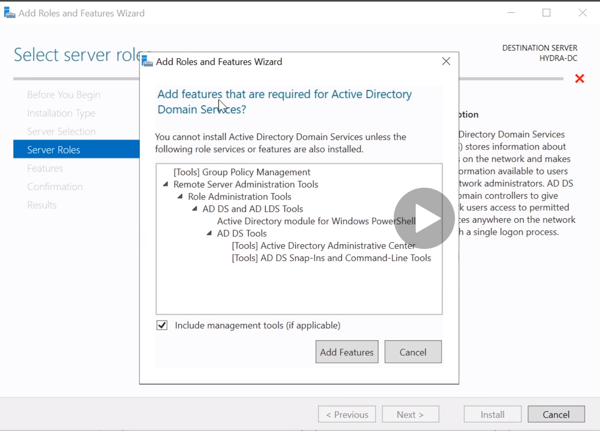

- 1 Windows Server 2019
- 2 Windows 10 Enterprise
Requirements:
60 GB Disk Space
16gb RAM
Domain Controller
Window Server 2019
PC Name - HYDRA-DC
Administrator Account
Username - Administrator
Password - P@$$w0rd!
Add roles and features:
Server Roles - Acitve Directory Domain Services

Add a new Forest:
Root Domain Name: MARVEL.local
Password for Directory Services restore mode: P@$$w0rd!
2 User Machines
- 2 Windows 10 Enterprise
1st Machine:
Domain Join Instead
User - Frank Castle
Pass - Password1
PC Name - THEPUNISHER
2nd Machine
Configuring Domain Controller: Setting up Users, Groups and Policies
1. Create User
- Frank Castle
- Username: fcastle
- Passwor: Password1
2. Create Administrator
- Tony Stark
- Username: tstark
- Passwor: Password2019!@#
3. Create User
- Peter Parker
- Username: pparker
- Passwor: Password2
4. Create Administrator - Service Account (Service Accounts should never be Domain Administrator)
- SQL Service
- Username: SQLService
- Passwor: MYpassword123#
- Description: My password is MYpassword123#
5. Setup File Share
- Opens up 139 and 445 ports
6. Create an SPN (Service Principal Name)
- setspn -a HYDRA-DC/SQLService.MARVEL.local: 60111 MARVEL\SQLService

Joining machines to the Domain:
THEPUNISHER: Frank Castle
SPIDERMAN: Peter Parker
- Create a share folder
- Network and Sharing Options -> Network Connections -> Ethernet0 -> Properties -> IPV4
DNS -> Domain Controller IP Address